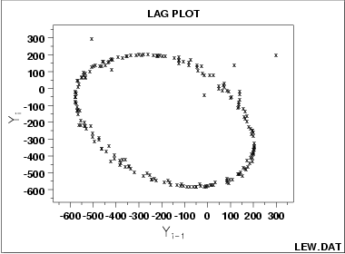

|
1. Exploratory Data Analysis 1.3. EDA Techniques 1.3.3. Graphical Techniques: Alphabetic 1.3.3.11. Lag Plot 1.3.3.11.4. Lag Plot: Sinusoidal Models and Outliers |
|
| Lag Plot |
 |
| Conclusions |
1. Underlying single-cycle sinusoidal model 2. Three outliers |
| Discussion |
Note the tight elliptical clustering of points.
Processes with a single cycle sinusoidal model
will have such elliptical lag plots.
If your process has an underlying
cylic model, then it is very important
to diagnostically determine such.
If one were to naively assume that the
above process came from the usual
and then estimate the constant by the sample mean, and attached uncertainties to that estimated constant by the standard +-t*s/sqrt(n), then the analysis would suffer because
(where a is the amplitude, f is the frequency--between 0 and .5 cycles per observation--, and p is the phase) is the correct model, can be fit by standard non-linear least squares, with easily obtainable uncertainties for the coefficients. The lag plot is also of value in outlier-detection. Note in the above plot, that there appear to be 4 points lying off the ellipse. However, in a lag plot, each point in the original data set Y will show up twice in the lag plot--once as Y(i) and once as Y(i-1). Hence the outlier in the upper left at Y(i) = 300 is the same raw data value that appears on the far right at Y(i-1) = 300. Thus (-500,300) and (300,200) are due to the same outlier, namely the 158th data point: 300. The correct value for this 158th point should be approximately -300 and so it appears that a sign got dropped in the data collection. The other 2 points lying off the ellipse: at roughly (100,100) and at (0,-50) are caused by 2 faulty data values: the third data point of -15 should be about +125 and the fourth data point of +141 should be about -50, respectively. Hence the 4 apparent lag plot outliers are traceable to 3 actual outliers in the original run sequence: at points 4 (-15), 5 (141) and 158 (300). In retrospect, only one of these (point 158 (= 300)) is an obvious outlier in the run sequence plot. The above illustrates and EDA statistical graphics phenomenon which happens frequently: a technique (e.g., the lag plot) is constructed to check one aspect (e.g., randomness) which it does well (the data is obviously non-random), but alon g the way the technique also highlights some other anomaly of the data (namely, that there are 3 outliers). Such outlier identification and removal is extremely important for detecting irregularities in the data collection system, and also for arriving at a "purified" data set for modeling. The lag plot plays an important role in such outlier identification. |
|
Recommended Next Step |
1. Do a spectral plot to obtain an initial estimate 2. Omit the 3 outliers. 3. Carry out a 197-point (out of the original 200 points) non-linear fit of the model
|